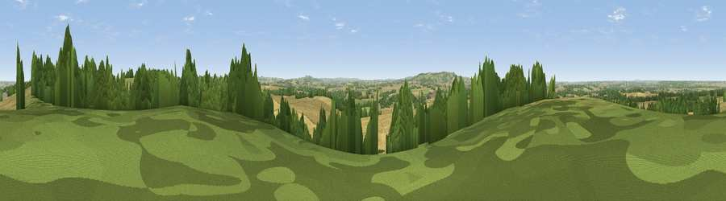

Viewpoint near Alderminster
#25856 in England · top 52% of its area beats it · near AlderminsterThe view, rendered

A 360° render of this exact spot computed from the terrain model, tree cover and land cover — summer colours, afternoon light, calibrated against photographs of famous viewpoints. Real trees, hedges and buildings will differ in detail.
The panorama
Grey silhouette: terrain skyline in each direction (720 bearings, Earth curvature and refraction included). Dashed green: skyline with trees (+15 m) and buildings (+8 m) as obstacles. Blue strip: how far the ground is visible on each bearing.
Where the view opens
Wedge length = distance to the farthest visible ground on that bearing (vegetation-aware). Rings at 10, 25 and 50 km.
What fills the view
60% cropland · 22% grassland · 18% woodland ·
Angular shares of the visible panorama (visual magnitude), not map area. Landscape diversity 0.43 (0–1 Shannon).
Key numbers
More beautiful places nearby
The staircase of upgrades: each row has a higher view potential than everything closer. Driving times are estimates from straight-line distance, calibrated against real road routing — check an actual route before setting out.
| Place | Direction | Drive | Score |
|---|---|---|---|
| Viewpoint near Alderminster | NNE · 1 km | ~2 min | 56.3 |
| Viewpoint near Ettington | NNE · 3 km | ~7 min | 60.1 |
| Viewpoint near Ilmington | SSW · 8 km | ~15 min | 72.6 |
| Viewpoint near Meon Vale | WSW · 8 km | ~16 min | 77.0 |
| Broadway Hill | SW · 18 km | ~32 min | 77.7 |
| Viewpoint near Elmley Castle | WSW · 28 km | ~45 min | 80.5 |
| Bredon Hill | WSW · 30 km | ~47 min | 83.0 |
| North Hill | W · 47 km | ~68 min | 86.8 |
52.13989, -1.64526 · source: screening · position refined by local search. Computed location — check access rights before visiting.